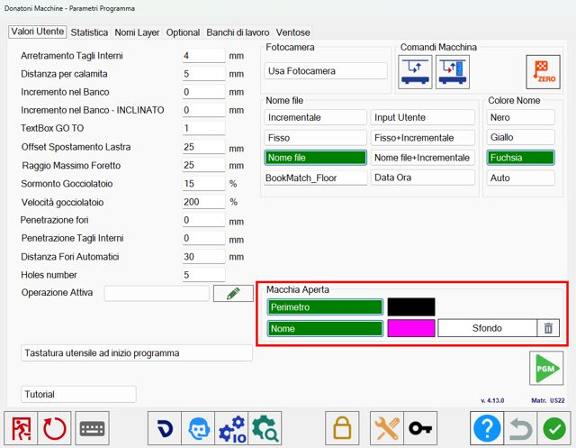

Mediante la función Easy Match es posible ver, en tiempo real, el fondo que tendrán las piezas en la posición original en la que fueron diseñadas, desplazándolas sobre el banco de trabajo encima de una losa.
/0.00.png)
Botones
Después de pulsar el botón se abre el siguiente panel:
/image-20250623-092224.png)
/1.2-20250623-092621.png) | Vista lado a lado |
/1.3-20250623-092752.png) | Vista previa |
/1.4-20250623-092845.png) | Vista del banco |
Guardar vista previa | |
/1.6-20250623-093138.png) | Modificar vista previa |
Vista previa
Permite desplazar las piezas haciendo clic dentro del perímetro de la propia pieza; de este modo es posible posicionarla en la ubicación deseada con mayor precisión.
/0.01.png)
En la vista previa se muestran todas las piezas procedentes del archivo importado exactamente en la posición en la que fueron diseñadas.
El tamaño de la vista previa corresponde a escala 1:1 con el tamaño de las piezas diseñadas.
Las piezas añadidas al banco de trabajo adoptan el color de la losa, mientras que las que aún deben añadirse tienen un fondo uniforme.
Desde la vista previa es posible:
Añadir una pieza al área de trabajo haciendo clic dentro del área que se desea mecanizar.
Mover una pieza situada en el banco de trabajo.
Seleccionar una pieza en el banco de trabajo haciendo clic dentro de la pieza.
Eliminar una pieza de la vista previa seleccionando la goma situada debajo de la lista de piezas y, a continuación, seleccionando en la vista previa la pieza que se desea eliminar. En este caso, la pieza también se eliminará del banco y de la lista de piezas.
Vista del banco
Vista clásica del banco de trabajo de Parametrix. Permite desplazar las piezas sobre el banco de trabajo utilizando toda la pantalla.
/0.02.png)
Vista lado a lado
Permite visualizar en la misma pantalla tanto la vista previa del proyecto como el banco de trabajo.
/0.03.png)
Guardar vista previa
Permite guardar la vista previa del mecanizado en curso.
Se abre la siguiente pantalla:
/image-20250623-094436.png)
Se solicita elegir el nombre de la vista previa, si se desea guardarla como imagen o PDF, dónde guardarla y su resolución.
Para la resolución puede elegirse entre auto (resolución automática), low, medium, high, ultra y custom (el operador selecciona la resolución exacta).
Una vez confirmado, la foto o el PDF de la vista previa se abrirá automáticamente.
/image-20250623-094751.png)
/image-20250623-094847.png)
Modificar vista previa
En esta pantalla pueden disponerse libremente las piezas que componen la vista previa.
Todas las modificaciones realizadas también se mostrarán posteriormente en las demás vistas.
/image-20250623-095011.png)
En la barra superior se encuentran los siguientes botones.
/2.02.png) | Mover piezas |
/2.03.png) | Mover vista |
Personalización de la vista previa
Dentro del panel de parámetros del programa, en la pestaña de valores de usuario, es posible cambiar los colores de algunos elementos de la vista previa del proyecto.

Perímetro | Permite mostrar/ocultar el perímetro de las piezas dentro de la vista previa. |
Nombre | Permite mostrar/ocultar el nombre de las piezas dentro de la vista previa. |
Fondo | Permite configurar el color de fondo de la vista previa. |
/4.01-20251008-084153.png) | Eliminar fondo |
Flujo de trabajo
Para trabajar con Easy Match es necesario importar en Parametrix el proyecto desde un archivo DXF.
El programa mostrará una vista previa del Book Match correspondiente a las piezas presentes en el archivo.
/3.00.png)
Después de tomar una foto del banco de trabajo, puede procederse a insertar sobre la losa las piezas que se deben cortar.
Para ello puede utilizarse el procedimiento clásico desde la lista de piezas o pulsar dentro del perímetro de una de las piezas mostradas en la vista previa.
Al arrastrar la pieza desde la vista previa, también se desplazará sobre la losa, lo que resulta útil para hacer coincidir las vetas entre las distintas piezas.
También puede hacerse lo contrario, es decir, arrastrar la pieza desde la losa y comprobar en la vista previa si las vetas coinciden o no según la posición a la que se desplace.
/3.01.png)
A continuación, siga el procedimiento estándar de mecanizado: cree el programa ISO y corte la losa.
Una vez finalizado, pulse el botón para pasar al siguiente mecanizado.
La vista previa conservará el progreso del estado de avance del proyecto.
Continúe adquiriendo la foto de una nueva losa e insertando las piezas dentro del perímetro.
/3.02.png)
Continúe de este modo hasta completar el proyecto.